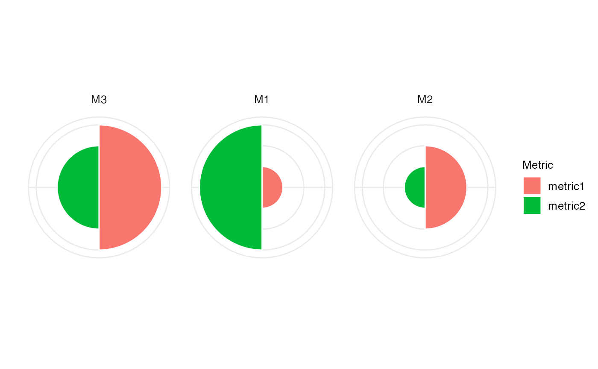

Create a polar plot. The input arguments for this functions are
typically generated using bettrGetReady, which ensures that
all required columns are available.
Usage
makePolarPlot(
bettrList = NULL,
plotdata,
idCol,
metricCol = "Metric",
valueCol = "ScaledValue",
metricGroupCol = "metricGroup",
metricColors,
metricCollapseGroup = FALSE,
metricGrouping = "---",
labelSize = 10
)Arguments
- bettrList
A
list, the output object fromprepData. IfbettrListis provided, argumentsplotdata,scoredata,idCol,metricCol,valueCol,weightCol,scoreCol,metricGroupCol,metricInfo,metricColors,idInfo,idColors,metricCollapseGroup,metricGroupingandmethodswill be ignored and the corresponding values will be extracted frombettrList. This is the recommended way of calling the plotting functions, as it ensures compatibility of all components.- plotdata
A
data.framewith columns representing methods, metrics, scores, and weights. Typically obtained asprepData$plotdata, whereprepDatais the output frombettrGetReady.- idCol
Character scalar indicating which column of
plotdataandscoredatacontains the method IDs.- metricCol
Character scalar indicating which column of
plotdatacontains the metric IDs. Typically,"Metric".- valueCol
Character scalar indicating which column of
plotdatacontains the metric values. Typically,"ScaledValue".- metricGroupCol
Character scalar indicating which column of
plotdatacontains the information about the metric group. Typically,"metricGroup".- metricColors
Named list with colors used for the metrics and any other metric annotations. Typically obtained as
prepData$metricColors, whereprepDatais the output frombettrGetReady.- metricCollapseGroup
Logical scalar indicating whether metrics should be collapsed by the group variable provided by
metricGrouping. Typically obtained asprepData$metricCollapseGroup, whereprepDatais the output frombettrGetReady.- metricGrouping
Character scalar indicating the column of
metricInfothat was used to group metrics. Typically obtained asprepData$metricGrouping, whereprepDatais the output frombettrGetReady.- labelSize
Numeric scalar providing the size of the labels in the plot.
Examples
## Generate example data
df <- data.frame(Method = c("M1", "M2", "M3"),
metric1 = c(1, 2, 3),
metric2 = c(3, 1, 2))
metricInfo <- data.frame(Metric = c("metric1", "metric2", "metric3"),
Group = c("G1", "G2", "G2"))
idInfo <- data.frame(Method = c("M1", "M2", "M3"),
Type = c("T1", "T1", "T2"))
prepData <- bettrGetReady(df = df, idCol = "Method",
metricInfo = metricInfo, idInfo = idInfo)
makePolarPlot(bettrList = prepData)
